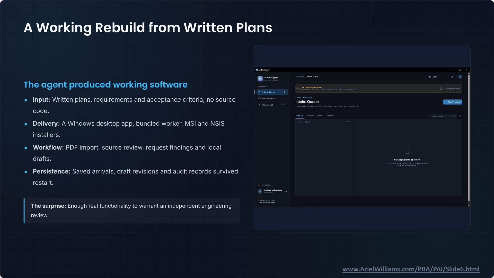

It Works: Agentic Coding and Legal Technology · Slide 6 of 12
A Working Rebuild from Written Plans
Slide snapshot captured · Ariel Williams


Text transcript
The agent produced working software
- Input: Written plans, requirements and acceptance criteria; no source code.
- Delivery: A Windows desktop app, bundled worker, MSI and NSIS installers.
- Workflow: PDF import, source review, request findings and local drafts.
- Persistence: Saved arrivals, draft revisions and audit records survived restart.
The surprise: Enough real functionality to warrant an independent engineering review.
Reconstructed application screenshot
MatterSignal — SOLO WORKSPACE
Workspace / Intake Queue. Dark. AR.
Synthetic evaluation mode
Use fictional documents only. Client data is not approved for this workspace.
I'm using fictional data
YOUR REVIEW DESK
Intake Queue
Every arrival, accounted for. Review what came in and decide what happens next.
+ Add documents
Search arrivals
ARRIVAL: 0 items. STATUS
Select an arrival to review
Choose a document from the queue to inspect its original source and available evidence.
YOUR WORKSPACE
Synthetic review tester. Solo reviewer.
Stored on this device. No cloud connection
- WORKSPACE
- Intake Queue: 0
- Batch Imports
- Review Lab: LOCAL
- Active: 0
- All arrivals
- Deferred
- Reviewed
Slide footer: www.ArielWilliams.com/PBA/PAI/Slide6.html